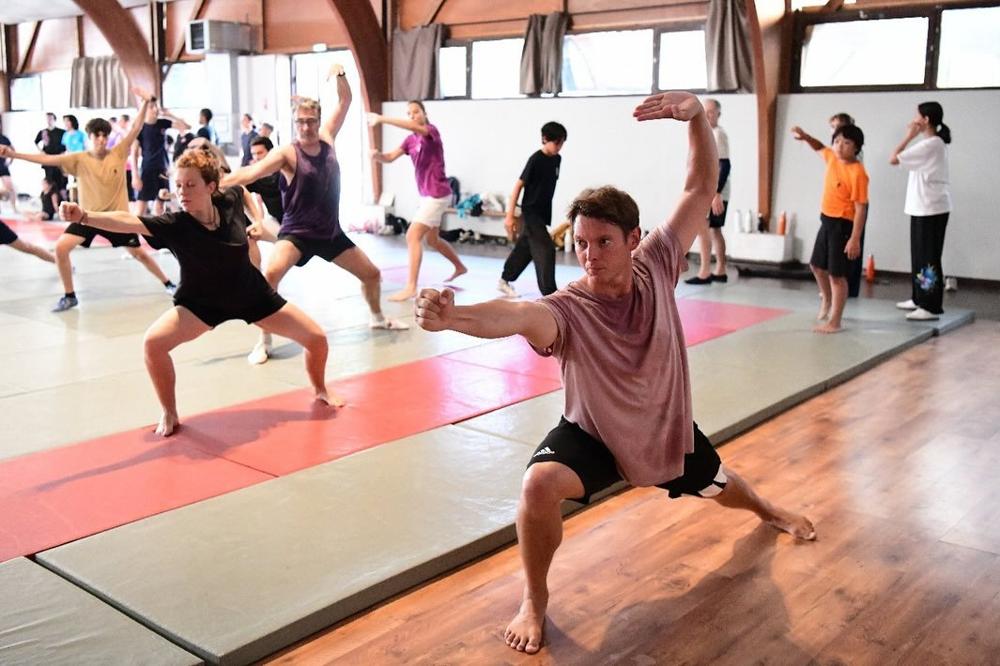

CQP MAM · 3ème Duan
Benoît
Denolle
Membre de l'équipe de France de 2017 à 2022 et médaillé international. Spécialiste de l'épée, de la lance et des styles du Nord et du Sud de la Chine. Il co-dirige le club avec Juliette et encadre les groupes de compétition et les cours adultes.